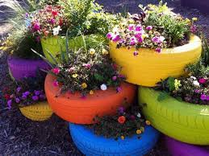
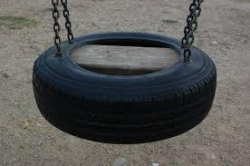

¿Que es reutlizar?
Reutilizar no es lo mismo que reciclar, como mucha gente piensa. Reutilizar consiste en lugar de tirar un material o algo que ya no se use, darle un nuevo uso. Como por ejemplo un neumatico; una vez que su vida útil termina, en vez de tirarla, con una soga hacer una hamaca.
Así como este ejemplo hay muchos mas que son indispensables para ayudar al medio ambiente y dejar de contaminar.


¿Cómo podemos reutilizar más frecuentemente?
- Usar la misma botella de agua
- Darle un nuevo uso a las bolsas del supermercado.
- Utilizar cajas vacias para hacer composteras, u otro invento creativo.
Así como estos ejemplos, hay muchísimos más y si todos contribuimos de la misma manera, podemos crear un mundo más limpio.